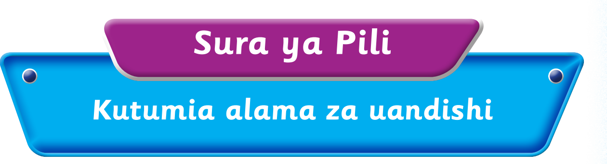
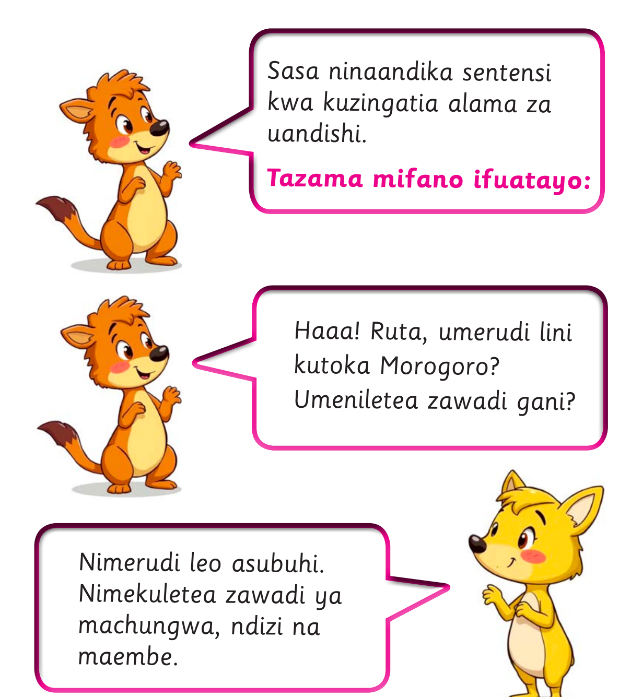

Sura ya Pili. Kutumia alama za uandishi.

Sasa ninaandika sentensi kwa kuzingatia alama za uandishi. Tazama mifano ifuatayo. Haaa! Ruta, umerudi lini kutoka Morogoro? Umeniletea zawadi gani? Nimerudi leo asubuhi. Nimekuletea zawadi ya machungwa, ndizi na maembe.